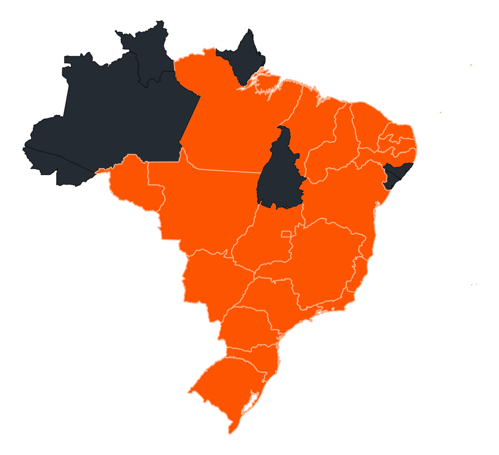

Agenda
Locações de mensalistas, aulas e avulsos no mesmo grid, com tarifário, bloqueios em lote e status por cor.
Enquanto outros softwares param no agendamento, o Triio cuida de agenda, bar, aulas, lojinha, financeiro, estoque e fiscal. Integrado, simples de operar e sem fidelidade.
Planilha para o financeiro, caderno para o bar, aplicativo só para reserva e o contador cobrando as notas. O Triio junta tudo isso em uma operação única.
Da rotina da arena ao relacionamento com os atletas, tudo acontece em um só lugar.
Locações de mensalistas, aulas e avulsos no mesmo grid, com tarifário, bloqueios em lote e status por cor.
Monte chaves, organize categorias, publique confrontos e acompanhe cada partida em tempo real.
Quero conhecerTurmas, professores, frequência e pacotes controlados sem lista paralela no papel.
Venda no balcão ou na comanda da quadra, com preço, margem e baixa de estoque na hora.
Contratos mensais, semestrais ou anuais com renovação, reajuste e histórico do cliente.
O pedido sai do atendimento e chega na cozinha organizado, sem grito e sem comanda perdida.
Abertura, sangria, conferência por forma de pagamento e fechamento de turno em minutos.
Contas a pagar e a receber, centros de custo e o resultado real da arena, mês a mês.
Entradas, perdas, inventário e custo médio para você saber onde a margem está indo.
NFC-e e NFS-e emitidas direto do sistema, com os dados batendo com o financeiro.
Ocupação por horário, ticket médio, ranking de produtos e comparativo entre períodos.
Pontos, benefícios e planos de clube para o cliente voltar mais vezes na semana.
Mais de uma unidade no mesmo login, com consolidação dos números em um lugar.
Arenas de esportes de raquete conectadas em diferentes regiões do Brasil.

Os estados em laranja são as regiões onde o Triio atua.
Cada módulo alimenta o próximo. A reserva vira comanda, a comanda vira venda, a venda baixa o estoque, o estoque ajusta a margem e o fiscal fecha o ciclo. Uma informação só, digitada uma vez.
Dois minutos assistindo explicam melhor do que dez parágrafos lendo.
Depoimentos de donos e gestores de arena que trocaram a planilha pelo Triio.
Com o Triio, reduzi em 80% meu tempo de gestão e aumentei minha receita. O sistema é completo.
A agenda por cores mudou o dia a dia da recepção. Ninguém mais reserva horário em cima do outro.
Tenho duas unidades e acompanho o resultado das duas no mesmo painel, sem pedir relatório para ninguém.
O consumo cai direto na comanda da quadra. O cliente fecha tudo de uma vez e o caixa bate no fim da noite.
Descobri produtos que eu vendia com margem quase zero. Ajustei o preço e a lojinha virou lucro de verdade.
Emitir nota deixou de ser um problema de fim de mês. Sai na hora da venda e o contador não reclama mais.
Migrar o fiscal para dentro do sistema economizou umas seis horas por mês da minha equipe.
Chamei no domingo às 21h com a quadra cheia e fui atendido na hora. Esse suporte 24h vale o contrato sozinho.
Time atencioso e que entende de arena, não só de software. Responde rápido e resolve.
Atendimento humano 24 horas por dia, 7 dias por semana, pelo WhatsApp. Quadra cheia com problema no caixa é urgência — e a gente trata como urgência.
Chamar o suporteDemonstração sem compromisso, implantação acompanhada e contrato sem fidelidade.